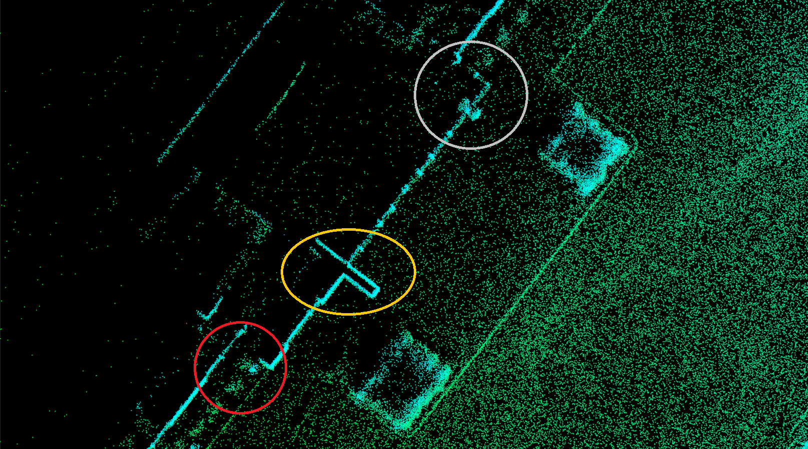
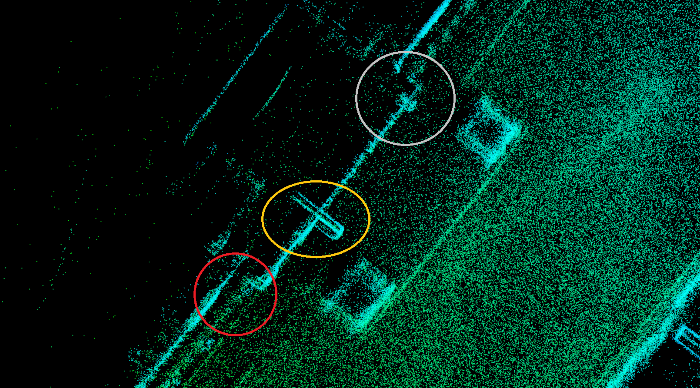

Calibration FAQs¶
How to Check Sensor Output?¶
Use the rostopic command. For example, type the following command to check the
output of HDL-64ES3:
rostopic echo /apollo/sensor/velodyne64/VelodyneScanUnified
If the topic data is displayed on the terminal, the LiDAR works normally.
How to Check INS Status?¶
Using Novatel INS as an example, type the following command to check the INS status:
rostopic echo /apollo/sensor/gnss/ins_stat
Find the pos_type field: If the value is 56, it has entered a good positioning
status (RTK_FIXED) and can be used for calibration. If it is not 56, reliable
calibration results cannot be obtained.
How to Complete a Quality Inspection?¶
At present, you complete the quality verification manually with a visual inspection of the results.
When the calibration is completed, the point cloud stitched during the calibration process is provided. In the point cloud, details of the calibration field can be easily identified. Assess the calibration quality for clarity. Look at objects such as building facades, street lights, poles and road curbs. If the point cloud is blurry and a ghosting effect can be found, the calibration is poor. If the calibration result is good, a sharp and clear stitched point cloud is shown.
Figure 1 shows the comparison between the stitched point clouds with good (a) and insufficient(b) calibration quality.

(a)

(b)
Figure 1. (a) a high quality calibration result (b) an insufficient one.
How to solve the permission error of calibration tools?¶
Output path needs write permission to be created folders and saved results. If
the path is missing the relevant permissions, you will receive the following
error:
terminate called after throwing an instance of 'boost::filesystem::filesystem_error' what(): boost::filesystem::create_directories: permission denied: "***"
Enter the following command to add write permission:
# add write permission to output path(e.g. /apollo/modules/calibration/data/mkz8)
sudo chmod a+w /apollo/modules/calibration/data/mkz8 -R
How to solve permission error when running sensor_calibration.sh?¶
Log path needs write permission to be created log files. If it is missing the
relevant permissions, you will receive the following error:
tee: /apollo/data/log/***.out: permission denied
Enter the following command to add write permission:
sudo chmod a+w /apollo/data/log